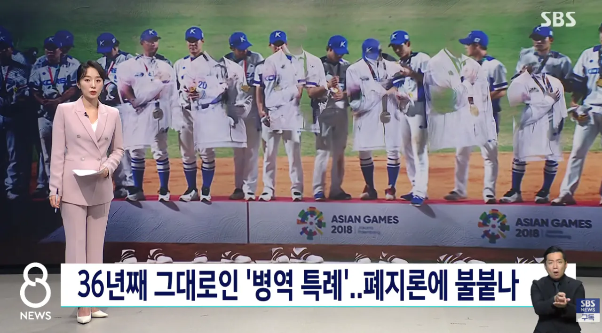
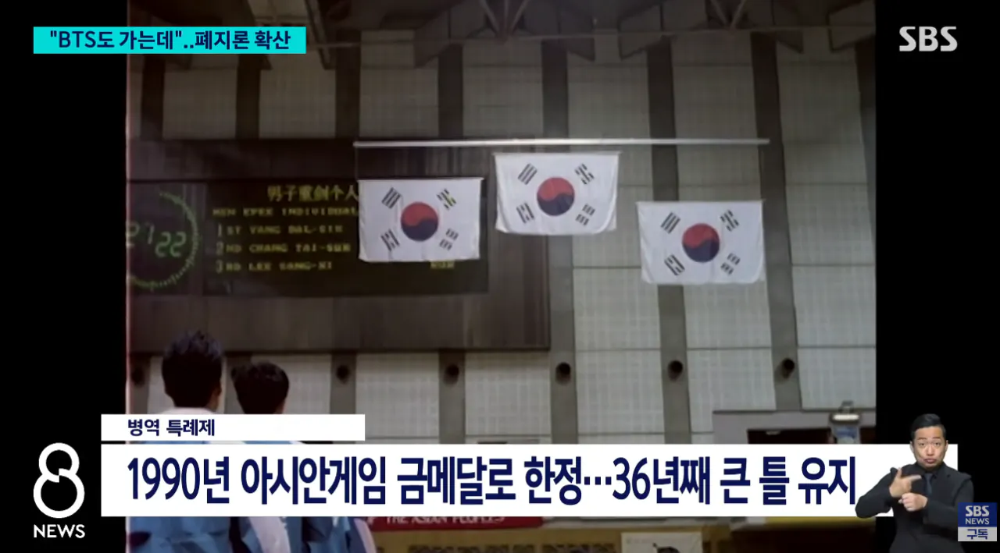
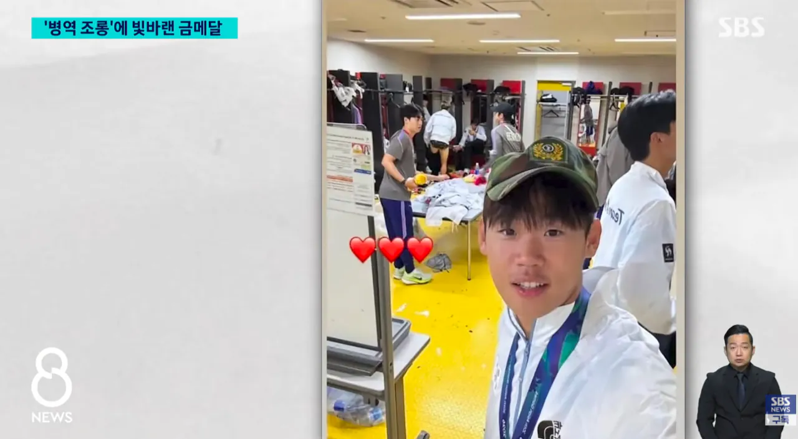
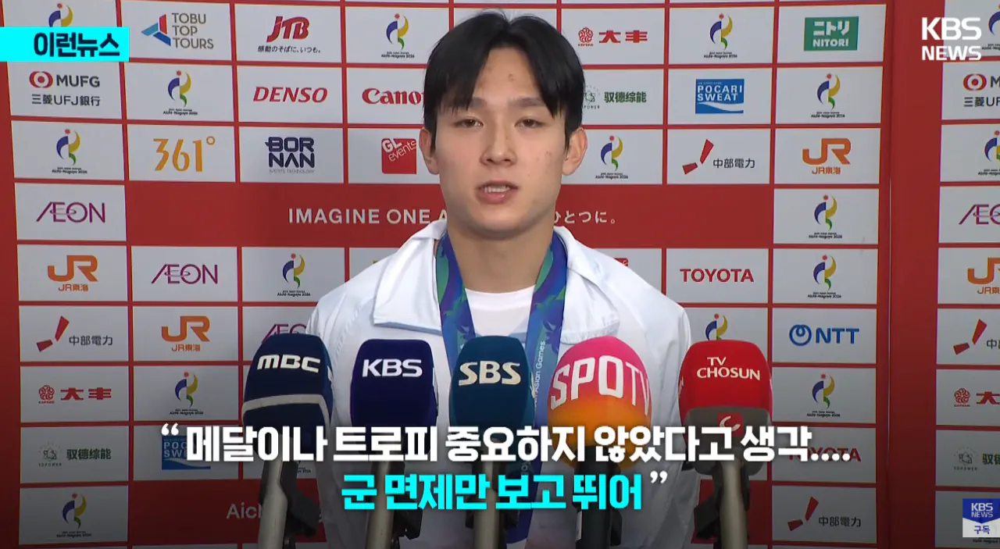

준 장애인,고아들도 끌고가는데 메달 땄다고 면제는 이해 안되긴해 ㅋㅋㅋㅋㅋㅋㅋㅋ




그 당시는 박지성, 손흥민, 이승우 이런 선수들이 병역은 관계없이 국가를 위해서 뛸 수 있어서 기뻤다 이런 인터뷰들 아니었음?
저런 식으로 말한 사례가 있었어?
사회에 공헌따위 없고 그냥 본인이 잘하는거 국민들 세금으로 편하게 운동 하면서 마인드가 썩어 빠졌네
군대가는게 형벌처럼 여겨지네 ;;
무엇보다 여성 징병이 먼저임 국위선양도 안하는데 왜 군대를 안감?
계집은 징병 안하고 투표권을 뺏어야한다
전역모 쓴 표정 잼민이같아서 화나네 ㅋㅋ
그만큼 절박했는갑지.
준장애인도 데려가니까 메달딴놈도 데려가라 - X
메달도 위대하고, 계속 정진해야하니까, 그리고 준 장애인은 델꼬가면 안되지 시밸럼들아 - O
BTS도 끌려간 마당에 국위선양은 이제 명분이 안서지 ㅋㅋ
이미 세계적 한류로 문화 강국인 상태인데 고적 촘촘따리 공좀 굴린거로 한국 얼마나 알리고 “국위선양“ 했냐 이말이야~
형평성에 어긋난다고 생각함
공놀이 좀 잘하고 못하는 걸로 대한민국 위상에 딱히 지대한 영향 없음
뭐하면 군대를 늦게 가도 되는 거고 애초에 국격을 높였다고 군면제를 해주는 것도 걍 근거없는 개논리지
3S로 국민 눈가리기하던 개도국 시절 잔재라 철도 한참 지남
형평성 따지면 여성징병부터 해야지
너 심심한데 잘걸렸다
제발로 과녁판에 걸어가네ㅋㅋ
세금으로 운동하면서 군면제까지 챙기고 티배깅 해버리기~
진짜 없어지면 저분들은 체육인들이...
누군가가 어떤자리를 지키고 있기때문에 우리가 편하게 살고있는거임..
누군가가 끊임없이 전기와 수돗물 정비를 하고있기 때문에 걱정없이 전기와 수돗물을 사용할수있고
누군가가 끊임없이 가로등과 도로를 정비를 하고있기때문에 안전하게 도로를 이용할수있는거임
군대도 누군가가 최전방에서 지뢰를 밟을 위험, 북한군의 총을 맞을 위험, 전쟁의 위험으로부터 자신의 목숨을 담보로 나라를 지키고있기 때문에 그 보호를 받는 사람들이 안심하고 생업에 종사할수있는거지..
하물며 이건 자기 의사로 간것도 아닌 의무복무니깐 더 존중받아야하는 위치임..
당장 군인이 안지키고있다고 생각한다면
북한군이 스멀스멀 지뢰 남쪽으로 깔아가면서 총들고 내려오기시작하면 그깟 공놀이 우승해서 군대안간다고 실실 웃으며 인터뷰할수있을까?
당장 서울에 포탄떨어져서 고기조각이된 자기 가족 유해나 줏으러다닐수도있는 상황에?
점점 자기가 당연히 받고있는것들에대한 소중함을 못느끼는 세상이 되어가는것같음
아무래도 피부로 전쟁을 느껴보지 못한 세대들이다보니 그렇겠지? 거기에 최소한의 국방이란 것에 다가가본적도 없으니까 더더욱 소중함에서 동떨어져 있는거고
그러니 전쟁이 나야됨. 그래야 정상화된다
그건 좀..
ㄹㅇ 자동생성 되는 줄 아는 애들이 너무 많음
웃긴건 저소리한애들은 어쨋든 안간다는거임 ㅋㅋ
후배들만 ㅈ된거지
제네들때문에 후배들 망했네
ㅋㅋㅋ 간당간당하면 중립 여론 화살표를 그냥 냅다 차버림. 없애는쪽으로
또 그냥 넘어가겠지
근데 없앨만해
발 세레모니보고 진짜 미쳤구나 싶었음...
체육도 이제는 엘리트 체육에서 생활 체육으로 바꿔야함 소수한테 들어가는 막대한 지원금을 생활체육쪽으로 돌려서
최대한 많은사람들이 취미 체육으로 건강한 생활을 할 수 있도록 만들어야함
금메달 병역특례는 진짜 바꿔야지. 국가 지원까지 받아온 선수들이 군대 안 가게 된 걸 자랑하는 듯한 인터뷰를 하니 보는 나도 좆같더라. 고아도 조건 따져 병역 감면받고, 아픈 사람도 현역 가는 경우가 있는데 “운동에 인생 걸고 노력했다”고? 군대 가는 사람들은 노력 안 하고 살았냐 시발 ㅋㅋ 금메달 따면 전쟁 났을 때 휴전선에 자동 방어막이라도 생김? 국위선양도 나라가 있어야 하는 거고, 그 나라를 지키는 건 자기 시간과 청춘 희생하며 복무하는 군인들인데 왜 스포츠 성적으로 군 복무에 예외를 주나 싶음. 걍 내 개인적인 생각임 ㅇㅇ..
어쩐지 전에 양민혁 처음 봤을 때부터 밉상으로 보이긴 했다
없애자 1표행사한다
솔직히 엘리트 스포츠 자체를 다 까 부숴야함 지가 하고 싶어서 스포츠 해야지 무슨 남의 세금으로 지들 취미활동 하고 있어
세금지원도 없애야 함.
왜 줘야 하는지 이유좀
진짜 국위선양은 bts가 쟤네보다 10만배는 더했을듯ㅋㅋ
인터뷰나 똑바로하든가
깽깽이 좀 잘 켜고 뚱땅거리고 뽈 좀 잘 찼다고 국위선양이 된다는 마인드는 도대체 버릴 때가 되지 않았나
병역특례 없애면 어디까지 꼬라박을지가 제일 궁금하네 ㅋㅋㅋㅋ
면제만 보고 뛰는 인간들 밖에 없는데 성적에 신경이나 쓰겠나???? ㅋㅋ
멀리 갈 것도 없이 병특없는 아시안컵은 70년 가까이 우승 못하는중.. 이게 존나 괘씸한 부분이다 진짜
세금으로 지원하는거도 끊어야 함.
금메달 땃을때 단 1개의 특혜만 남겨야 한다고 하면 너도나도 군면제고를듯
그만큼 군생활이 개 ㅈ도 쓸모도 의미도없단 소리 아니겠어?
북한한테 문열어주고 그냥 전쟁낫으면 좋겟다 나라 왜 지키냐
여기서도 찬반 ㅈㄴ 나뉘는거 보면 진짜 한님들은
연령 불문 답 없다는걸 다시 느낀다
어짜피 커리어 쌓으면 국내 안남고 해외로 튀잖아?
왜 우리는 쭉정이들만 남은 리그 봐야되는데ㅋㅋ
군입대는 징벌이 맞는 것 같다..
남자로 태어나 국위선양 못한 죄로 2년 구르고 왔다..
올림픽은 ㅇㅈ인데 아시안게임은 뺴자
중국이 올림픽메달 미국담인데 중국이 위대한 나라로 보이냐?ㅋㅋㅋ 공놀이하는새끼들이 뭔 대수라고 시팔
군면제 줘도 되는데 대신 올림픽 금메달 월드컵 으승 한정으로 바꾸자 이정도는 되야지 좀 명분이서지
한마디면 충분함 'bts도 군대를 갔다.'
참신기하네 ㅋㅋㅋㅋ18년에 이런말을 개드립에서 했는데 그떄는 열등감이니 뭐니 하면서 비추 30개넘개받았는데 ㅋㅋㅋ